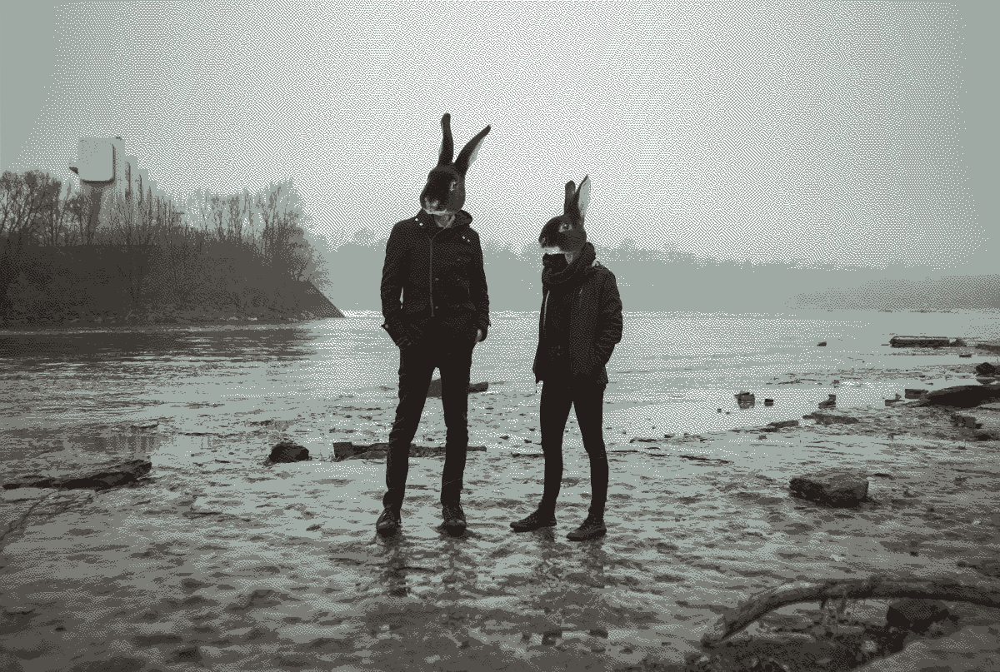
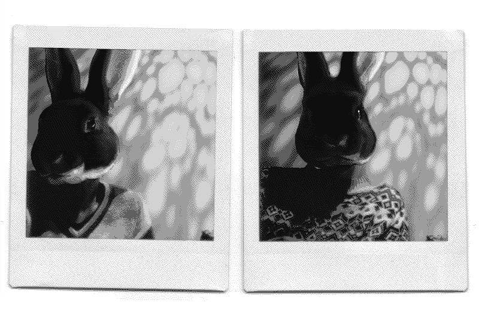

about us
Hundred Rabbits is a small artist collective. Together, we explore the planned failability of modern technology at the bounds of the hyper-connected world. We research and test low-tech solutions and document our findings with the hope of building a more resilient future.
We live and work on a 10 meter vessel called pino, we have sailed around the Pacific Ocean and realized how fragile the modern-day computing stack was. Living in remote uninhabited parts of the world has offered us a playground to learn how technology degrades beyond the shores of the western world.
Read more about our philosophy and mission. See our floating studio's press appearances, and have a look at our onboard library. For monthly updates on our projects, see log.
drownspire was the precursor to Hundred Rabbits. We made art toys, jewelry, apparel and sold tickets to Chiptune events in Montreal.
rabbits
Rek(they/them, or iel) is a writer and cartoonist, Devine(they) is a programmer, artist and musician.
Contact
- Subscribe to our RSS Feed here.
- Follow us on Mastodon: Rek & Neauoire
- Visit our personal websites Kokorobot & XXIIVV.
- Email us at hundredrabbits at gmail dot com.
Internships?
Over the years we have received a few requests for internships, while we appreciate the interest, our small operating budget, our erratic work schedule, and our intermittent internet connection makes this too difficult.
story
Back in 2016 when first operating on a sailboat, we experienced frequent failures with both software & hardware, largely due to our small energy storage and lack of reliable connectivity. The solution was to create tools that would be better suited to the limits of our situation. The objective was to replace the bloated, closed-source or subscription software that we were using to do creative work, such as Photoshop, Xcode and Ableton. We were somewhat familiar with web technologies, so we decided to build our programs on this new up and coming framework called Electron.
While solving some of our issues, Electron was rapidly increasing in size and soon joined the rest of the software that we wanted to do away with. Our focus shifted toward reducing our energy use, and to ensure reliability we began removing dependencies.
To transition toward our new goals, we developed offline web versions as temporary stand-ins while researching ways to build more resilient software. We eventually ported our tools to C, but while we had achieved ideal energy usage, portability was still an issue, so we kept looking. We learnt 6502 assembly, seeing players run our NES game on all these different platforms gave us a new idea.
And so, in 2021 we began designing a small virtual machine with a focus on implementability; meaning that moving forward, the applications themselves will no longer need to be ported. Instead, to make any one program available on a new platform, the emulator is the only piece of code that will need to be modified, which is explicitly designed to be easily implemented.
This is where we are now. uxn may solve our cross-platform issues, while being extremely light. It took us a long while to get here, we hope that one day the Uxn versions of our software replace the desktop and web versions [16.05.21].
Go slow, and fix things.
why a boat

From 2012 to 2014, we lived in Japan. Rek was working in an animation studio, and Devine, in a software company. On weekends and evenings, we worked on our first two games: hiversaires & oquonie. Originally from Québec, we were traveling back and forth between Canada and Japan often. We wanted to exit the wasteful loop of acquiring the necessities of life each time our lives were uprooted.
We had heard of people living on sailboats but neither of us had even stepped foot on one, nevertheless, we soon found ourselves watching the videos of David Wellsford, Teresa Carey and Nike Steiger, and became obsessed with the idea. Lack of experience aside, we thought that traveling was a good catalyst for learning new languages, for developing an interest in foreign cultures and ultimately for building empathy, curiosity, and creativity.
In January 2016, we left the cold of Montréal and moved west to British Columbia, where we purchased pino. Our curiosity soon led us to make our first trip out to sea, which escalated into a circumnavigation of the Pacific Ocean.
Our life at sea changed how we work, and how we think. We've always made art, and always will, but now we are working on ways to keep doing that sustainably, which translates to making lean and open software that are backward-compatible.
A boat, for all its complexity, is in fact a version of simplicity, but of a satisfyingly complex kind. - Adam Nicolson
where
Pino's current location: victoria, BC, Canada.
View a map of our Pacific circumnavigation, in which we sailed to the us west coast, mexico, french polynesia, cook islands, niue, tonga, new zealand, fiji, The marshall islands, japan and western canada.
website
This wiki is statically generated from a small C89 program, the sources are available here, if you find a typo, a broken link or have a code specific question, feel free to open an issue.
setup
We carry many devices onboard, some for everyday tasks, while others are reserved for low-power situations.
In 2016, we moved aboard Pino with two MacbookPro 2012s. One of them died in Mexico in late 2016 (see tools ecosystem for details). A friend gave us a used MacbookPro 17", but it was too power-hungy for the boat, and it later died in 2020 during our passage from Japan to Canada across the north pacific ocean(a giant jar of umeshu exploded over it).
Most of our computers are secondhand, donated to the studio between 2017 and now. We'd like to thank the following people: Josh Auget for the x250Thinkpad, John Eternal for the MacbookPro 13" 2010, Brian Crabtree for the Pinebook, and Lloyd Williams for the MacbookAir 2013 11".
Main work stations:
Current issues:
Macbook Air 2013 awaiting keyboard replacement (we have the part).
In August 2023, the Pinebook(Manjaro) developed a weird keyboard error, making it impossible to input a password to log in, and then it stopped booting. We'll try to fix it later when in port. The MacbookPro 2012 also stopped booting, not sure why. We'll test it later when we have access to AC (may be battery related).
Note: We are always looking for backup used laptops, if you can help us on that front, let us know at hundredrabbits at gmail dot com.
Other work stations:
- MacbookPro 2010 running Manjaro
(changed battery, for the third time, bit too power demanding to use at anchor) - ChromeBook running ChromeOS
(working, low-power, but doesn't permit the use of Uxn tools, can barely run Gimp)
documenting

Wiki. In April 2021, this website was converted into a wiki. This type of website is a kind of archive and mirror of everything that we have done, and that we have learnt. It's a living document that outlines where we've been, and a tool that advises where we could go.
Rek is the steward of this wiki, and authors most of its write-ups and articles(unless stated otherwise). Devine proofreads Rek's writing, and appends to the documentation of our projects regularly. You can download a copy of the entire website content and sources as a .zip.
In all that is shared on the many pages populating this wiki, we reserve the right to be wrong, and to change our minds. We are always learning, and deepening our view and understanding of any one thing.

Videos. Between 2016 and 2020, we filmed our travels. We filmed regularly, but kept many experiences to ourselves, wishing to be present during worthwhile moments instead of hiding behind a lens. At the end of each month, we would watch our footage and write a summary of that month's events. We planned the monthly videos ahead, and we would gather footage based on what we needed. While one was busy recording the narration, the other would write music. We had our respective tasks when it came time to edit, but both of us took part in the filming.
In rough weather, we prioritize our own safety above all, and so we rarely had footage of rough seas.
What we use to film and edit our videos:
- GoPro Session4, used, donated by Lloyd Williams in 2022.
- Sony a7, used, donated by TokyoLuv in 2019, with Novoflex's NEX/LEM Adapter to fit M-Mount lenses(photos/video).
- Sony a6000(see photo).
- Sony PCM-A10(audio recording)
- Blender(video editing)
- orca(music making)
- Gimp(credit illustrations)
What we use to take and process the photos featured on this website.
- Sony a7, used, donated by TokyoLuv), with Novoflex's NEX/LEM Adapter to fit M-Mount lenses.
- Sony a6000(see photo)
- Leica, purchased used. RIP 2016. (See a photo)
- Voigtländer's Bessa R3M 250 Jahre(film), purchased used, see a photo).
- Gimp(image optimization/resizing)
license
The license applies to all the documented projects, the projects themselves and their assets. The source code of this website and our apps are under the MIT License, but the assets and text content of this website and of our apps are under the BY-NC-SA4.0 License. We are happy to pass knowledge, and that others can learn from our projects, improve on them, or make them into something else that is useful, but please, do not try to sell our projects as is under a different name. Doing so is very lazy, and disrespectful to us.
DO NOT resell or mint our work.
You can find our more recent projects on Sourcehut.
contribute
You can find the source files to all of our projects over on our SourceHut page.
This website has no tracking or analytics.